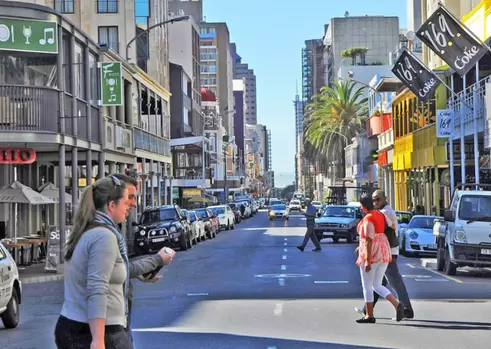
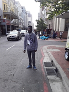

Profile picture
Sibusiso Nkosi
New York
1. The Buildings There’s a reason you’ll see so many people looking up when you visit New York! The architecture on display in NYC, both old and new, is truly something to behold. Buildings often take on a life of their own due to the passion and vision that goes into their design. Whether you want to see a skyscraper that’s over 1700 feet tall or a church that’s 200 years old, New York has got you covered! 2. The Food Whats kind of food do you LOVE? Well, chances are you can find it when you visit New York City. As an international hot spot, NYC is host to culinary experts from all across the globe. Some of the best Chefs in the world dream of coming to the Big Apple to serve up their signature dishes. Even if you’re not a foodie, you’ll still have your choice of tasty treats! The only question then is: Nathan’s or Gray’s?
3. The Theatre Some of the greatest actors and performers of the last 100 years made their name on a Broadway stage! The Theatre district in NYC (ever expanding as it may be) is home to amazing talent and entertainment. There are shows for every member of the family! And to top it all off, you may get to see someone before they hit the big time! But don’t feel tied down to Broadway. Seeing any theatre in the city is a great notch for everyone’s New York belt.
4. The Culture As home to citizens from all over the world, New York is a wonderful melting pot. Travel to most corners of Manhattan and you will find groups from various other countries who have carved out their own little piece of the American Dream. In just a 20 minute walk you can see travel through both Italy and China! There are cultural influences throughout NYC and they are perfect for opening your mind to new things!
5. The Experience This one may seem like a no brainer but it is very important! When you Visit New York City, you are stepping into another world. Another way of life! A life where the Subway can decide your whole day for you (whether you like it or not). Where parades are as regular as a monthly rain. A life where everything is within reach but you still have to work to grab it! It’s true what they say, if you can make it here, you can make it anywhere. Why do YOU love to Visit New York City? Let us know in the comments! And, if you’re already planning on visiting, come take a tour with us and see just how much we love this place!
A foreign language
| spanish prase | English prase |
|---|---|
| Hola | Hello |
| cómo estás | how are you |
| adiós | goodbye |
Long-street
- Long Street could be described as the funkiest and loudest street in Cape Town
- ubstling with markets and
- bars, restaurants, pubs and clubs lining this iconic road.
Green-market
- Greenmarket Square is one of the liveliest hubs in Cape Town.
- It’s the second oldest public space in Cape
- Every morning, traders lug carts loaded with wares to the square to set up
Castle of Good Hope

- he first stone was laid on 2 January 1666 and it was completed by April 1679
- Castle was built by soldiers, volunteers, slaves and Khoi undergoing punishment.
- The Castle of Good Hope was not built by Jan Van Riebeeck.